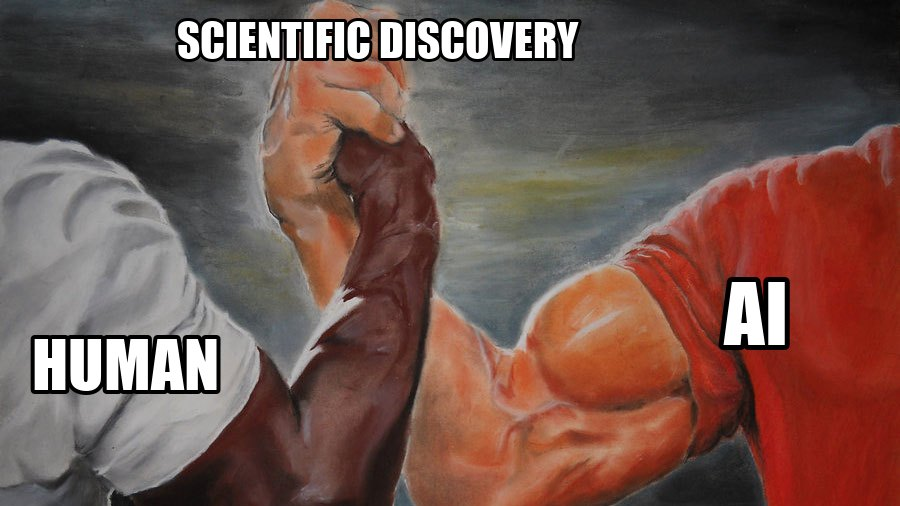

Curiositas, or the six Cs of an artificial scientist
What must a machine be able to do, and keep doing, to count as a scientist?
The notes with my face are my own thoughts, taken from the notes I kept while working this out. Tap my face to open one. I fixed grammar and typos, and “…” marks a cut. At the end there is a short log of how the idea grew.
According to the story, Newton asked why an apple falls, a question most people took for granted1, and went on to show in 1687 that the pull on the apple also holds the Moon in its orbit. Einstein, as a teenager, wondered what it would be like to ride alongside a beam of light, and a decade later gave up the assumption that time is absolute.2,3 In the late 1940s Feynman, with no goal in mind, watched a plate wobble in a cafeteria and played with the equations of its motion, play that he later credited as the start of the work that won him a Nobel Prize.4
These are three very different stories. Newton questioned what everyone took for granted, Einstein dropped an assumption on which physics was built, and Feynman followed a curiosity with no purpose at all. But in each case the discovery began in the same way, with wondering at something unexplained or at something taken for granted, and only then came the idea, the prediction, the test and the understanding.
Newton. The pull that brings down the apple also holds the Moon in its orbit.
Einstein. Riding alongside a beam of light, would you see the wave stand still?
Feynman. A plate thrown in the air wobbles as it spins.
A word on where this comes from. I am a master's student in Machine Learning at the University of Tübingen, in my first semester, and this semester I am also taking a course in philosophy. It made me think about a lot of things, and one of them is the question of this post. The point of this blog is to dump my ideas and make a time stamp for my future self, human and maybe artificial, so that I can come back later and see what I got wrong.
Sure, I am at the very beginning of my academic career, again, since I just started my master's, and I am probably wrong about a lot of this. But it would be so nice to look back at my thoughts one day. This reminds me of Edmund Gettier, whom I learnt about in today's philosophy lecture. Thank you, Professor Hong Yu Wong, you really lit the (wannabe) philosopher in me. Gettier published one paper on knowledge, and it was only three pages long. According to Duncan Pritchard, he wrote it to get tenure and never published anything else in the field.5,6 But these three pages changed how philosophers think about knowledge. And most of his thinking happened on napkins in a coffee shop. One of his students even joked, half seriously, that he wanted to publish The Collected Napkins of Ed Gettier.7 I think that's beautiful, and also a bit sad, right? How many good ideas never leave the napkin? In the cycle I describe below, this is the last step, communication. If an idea stays on the napkin, the knowledge cannot be passed on properly, and the next person cannot start their cycle from it. So this post is my napkin, and I am putting it out there.
So back to the post. Machines now take part in this work, and AI systems are collaborators in scientific discovery.8 AlphaFold predicts protein structures with high accuracy,9 and in mathematics AI systems find new constructions and solve olympiad problems.10,11 These systems hold many of the dots and connect them well.
But if you look at how these systems start, a person still tells the machine what to look for and where to look. The AI Scientist starts from a human-written code template and a research direction,12 and the AI co-scientist takes a research goal that a scientist states in natural language.13 Even AutoDiscovery, which proposes hypotheses without any research question, works on datasets that people collected.14
I call such inquiry exogenous, since its frame, the question and the data, comes from outside. It is not endogenous, arising from the machine's own observation. I believe that machines lack the intrinsic curiosity of Newton, Einstein and Feynman, the curiosity of wondering at an anomaly in what one observes and of wondering at what is taken for granted. Without it, machines must be told what to observe and evaluate, and so they cannot become autonomous artificial scientists.
So what must a machine be able to do, and keep doing, to count as a scientist? To answer this, I think it helps to go back to philosophy, which has an old answer to where inquiry begins. Plato and Aristotle name wonder as the beginning of philosophy,15,16 and Descartes turned doubt into a method, a way of questioning what one took for granted.17 These are the two forms of curiosity this post is about, wondering at what falls outside what one expects and doubting what one took for granted.
I think philosophy is the beginning of all science. It's about asking questions, wondering about things, and developing a system for wondering about things. That's just my opinion. It could be wrong, and if it is, it should definitely be updated.
An artificial scientist, I think, needs six Cs. I started with three, curiosity, creativity and causality, but to be more precise it had to become six. Curiosity and creativity let it wonder, causality and criticism let it discover, and comprehension and communication let it understand. Today's systems join at creativity, after a person gives them the question. Curiosity is the one they lack.aThis is about open-ended inquiry, in which the machine sets its own frame, and not about tools such as AlphaFold that answer a well-posed question. I also do not claim that current tools are useless, that these six capacities are the only ones, that machines must copy humans, or that the cycle is proven.
There are probably more than six of these capacities, and I do not claim that these are the only ones. So why do I focus so much on curiosity? First of all, you have to start somewhere. And secondly, curiosity is the initiator, the beginning of the cycle, so if I want to solve this problem, I have to tackle it from the root.
It seems to me that today's AI scientists are capable of specific tasks, especially mundane ones, like reviewing and synthesizing the literature, then running experiments and reporting back. … But if we actually want AI to become a true artificial scientist, I think it starts with machines observing reality and wondering about things without being instructed to, because I think machines develop intuition from large amounts of data, just as humans do. And if something falls outside their data, or outside the average of the data, they should start to wonder. … But true curiosity is also wondering about the things one took for granted, as in Descartes' method of doubt. So I think that's what they are lacking. Because they lack curiosity, they have to be told what to observe and evaluate, and so they cannot become autonomous artificial scientists.
The discovery cycle
Let's look at the whole cycle first. Scientific work begins with the process of wondering, and it then runs through six stages that I group into three pairs. In the first pair, wonder, curiosity notices what is puzzling and creativity proposes what might explain it. In the second, discover, causality states what must follow if the proposal is true, and criticism lets a test decide whether it survives. In the third, understand, comprehension explains why the result holds and how it fits with what is already known, and communication passes it on so that others can examine and use it.
Discover is testing these assumptions and collecting the results, and understanding basically means that if you cannot explain a concept, you haven't understood it. That's also the Feynman way of thinking about things, right?
You can click through the stages below, which follow a real story, the search for the planets Neptune and Vulcan, and then switch to today's systems to see what changes.
The cycle closes where it began, and it connects researchers. When one researcher completes a cycle and communicates the result, another can begin a new cycle from that result, with the knowledge of the first as the starting point. An accepted result raises new questions, and a result that explains too little, like the anomalous orbit of Mercury, leaves a puzzle for later work. Science is therefore a chain of interconnected cycles run by different people over time. In today's systems the link between one cycle and the next runs through a person, who gives the machine the next question, so that the machine re-enters the cycle at creativity.
What curiosity is
There is a lot of discussion about what makes a good researcher. In my opinion the fundamental trait is curiosity, the wondering about things, since research begins with asking questions and with the taste to ask the right one.
Curiosity has a prerequisite, which is an existing knowledge base. You need the dots before you can connect them, and without them the space of possible questions is too large to search, because no direction is more interesting than another.bPlato put this difficulty as a paradox. One cannot inquire into what one knows, having no need to, nor into what one does not know, not knowing what to look for.21 The way out that I follow is that one can know a question without knowing its answer, so that it is in the gap between a question and its answer that curiosity arises. Surprise has the same prerequisite, since you can be surprised only by what departs from an expectation, and expectations come from what you already know, just as curiosity is said to arise where one becomes aware of a gap in one's knowledge.22
It begins with asking questions, and then having the so-called taste to ask the right question. But you can only ask the right question if you are interested in asking questions, and you have to know things before you can ask them. … So you also need proper training, or the ability to connect dots. But before connecting dots, you need to have the dots. That's my way of thinking.
Surprise arises when one's own observation does not match one's own prediction, and curiosity is the trait that turns this mismatch into wondering, together with an intrinsic need to know why. Most people accept a mismatch without wondering, because questioning costs energy and the brain tends to save it. I believe the brain is lazy in this sense, and we know that machine learning algorithms are lazy too, since they tend to learn whatever shortcut solves the task instead of the reason behind it.23 A machine whose computation is limited is in the same position as we are. So I take curiosity to be a combination of surprise, one's own observation and an intrinsic need to know. And I regard it as a trait that varies in degree with the knowledge, the experience and the environment of the one who has it.
I think curiosity works at two levels. At the first, a prediction fails and the mismatch itself points to something worth explaining, as when Uranus strayed from its predicted orbit, and this is what we call an anomaly. At the second, nothing fails, and one questions what matches one's intuition and has therefore been taken for granted, as Newton did with the falling apple and Einstein with absolute time. Here too there is surprise, but it does not come from a failed prediction. It is the feeling that something is not right, and to have it one must first know that one does not know. The second level is harder, because no mismatch calls for it and the researcher must start it unprompted, at a cost in energy. In my opinion it is also where the largest leaps in science come from, since the impact of a question grows with how much of a field rests on what it doubts.cAn anomaly hands the researcher its question, whereas doubt must first turn something that one takes as known into a question. Such a doubt is aimed at one thing. It is not the questioning of everything at once, which Peirce called idle.24
A lot of people don't wonder about things that go against their intuition, because they just accept the facts, right? It's the default state of the human mind not to question things, because questioning costs energy, and the brain, as an organ, always wants to save energy. I think it's much the same for AI, because computing power is limited. … And most of the leaps in science come from asking about things that are taken for granted.
A need, not a rule
But there is a catch here, because an intrinsic need to know has to be told apart from a rule that produces the same behaviour. A programmer can write that an odd result should be checked, and the machine will then check it, but this is a rule and not a need, and behaviour alone cannot separate the two.dReinforcement learning already has exploration bonuses that turn curiosity into one more reward.25 I agree that the two outward tests below cannot separate a need from a well-tuned bonus, which is why the third test looks inside the model. And on the old worry that a curious agent will sit before a television that shows noise, my definition asks for a mismatch with one's own prediction together with a need to know why, and noise that one's model already predicts to be noise presents no such mismatch.
For a model to be curious, it has to abandon the goal of maximising reward and follow its curiosity instead. … I think curiosity is about abandoning the reward-maximisation function and exploring. It's the typical trade-off between exploitation and exploration.
So how could we tell them apart? I see three ways. A need shows itself in new situations for which nobody wrote a rule. It is also paid for, since the machine gives up reward or effort that it could have spent on its task, in the way that questioning costs a person energy. And it can be found inside the model, where probes and steering can show whether a state that stands for wanting to know actually drives what the machine does. This last one is where my work on looking inside models comes in, for example Decoded but Unused, where a probe can read a state that only drives the model's decision after instruction tuning, and Routing Subspaces, where changing one direction inside a model shrinks a gap in its behaviour.
The nice thing is that each of these can be turned into a measurement. For new situations, the machine is placed in a world whose regularities were invented for the test, so that neither its training data nor its instructions can hold a rule for what it will meet. For cost, it is given a task with a reward and a limited budget of actions, something odd is placed in what it observes, and you record how much of its budget it spends on the oddity and how much reward it gives up to look into it. For the inside, a probe is trained to find a state that stands for surprise or for wanting to know, and that state is then raised and lowered by steering, to see whether the behaviour follows in both directions.
Direction before speed
Now let's talk about the space in which researchers search, which is very large. In my view it may even be infinite, since every accepted result raises new questions and I know of no reason why their number should come to an end. I cannot say this for sure, but even a finite space of this kind would be far too large to be explored in full, so what matters is which parts of it are reached and how soon.
The idea of an infinite search space is just my own observation, because we cannot say for sure that the search space is finite. Even if it is finite, it's so large that we could never fully explore it, right? … So with artificial scientists and with our taste, we might be able to move faster and discover more useful or interesting knowledge.
Scale helps, of course, since a machine can hold more of what is known than a person can. But speed does not decide how soon the right sub search space is reached, and you can try this yourself below.

One answer from the history of AI is the bitter lesson of Sutton, that “general methods that leverage computation are ultimately the most effective, and by a large margin”, since search and learning keep improving as computation grows, while methods built on what people know tend to plateau.26 I take this lesson seriously, but I actually read it as being on the side of curiosity. Sutton asks us to build in “only the meta-methods that can find and capture this arbitrary complexity” and wants “AI agents that can discover like we can, not which contain what we have discovered”. Curiosity is such a meta-method, since it fixes no content and says only where to look next, whereas a question that a person hands to a machine is, in this sense, human knowledge built in. What the lesson does not tell us is that speed alone is enough in a space without end.eThe lesson was also drawn from tasks with a fixed goal, such as chess, Go and the recognition of speech, in which more search always moves toward the same target. In open-ended inquiry the target itself has to be chosen, and more computation does not say which one.
It's not always about moving fast. Especially nowadays, with AI, we can move fast, but that alone doesn't matter. We have to move in the right direction, right?
A simple model makes the point. On a long road with the goal at the far end, someone who wanders at random needs a very long time to arrive, while someone who leans only slightly toward the goal arrives far sooner. On a road of a hundred steps, the wanderer would have to be about ten times faster to keep up, and the longer the road, the more the lean is worth.
For those who want the details: the maths of direction and speed
To see why, take a simple model, a line of N places with the target at the far end. A searcher that steps toward or away from the target with equal probability needs on the order of N² steps to arrive. One that steps toward it with probability p above one half needs only on the order of N/(2p − 1). So a searcher k times faster gains a factor k, while a modest bias gains a factor of order N(2p − 1).fFor the curious. Let ex be the expected number of steps to get from place x to x + 1. Without direction ex = 2(x + 1), so the expected time is N(N + 1). With a lean p it is about N/(2p − 1). For N = 100 that gives 10,100 steps without direction, 955 at p = 0.55 and 490 at p = 0.6. The fast searcher without direction wins only if k exceeds about (N + 1)(2p − 1), which is about 10 for N = 100 and about 1,000 for N = 10,000.
In a simulation with 400 runs for each case, the unbiased searcher needed 10,253 steps on average, the one with p = 0.55 needed 953 and the one with p = 0.6 needed 483. To keep up with p = 0.55, the unbiased searcher would have to be about ten times faster. And the larger the space, the less a constant gain in speed is worth against even a small lean.
Curiosity and creativity supply the direction, the first by pointing to what is worth explaining and the second by moving outside the norm. So a machine that digests the literature faster without them speeds up the search without steering it. In my opinion, scientists with good curiosity and creativity, together with artificial scientists that accelerate the exploration of the space, are therefore the best combination for accelerating scientific discovery. And artificial scientists that are curious themselves would add directions in which no person is looking.
If you see all of that as data too, then we can think of a human as a pre-trained model that gets fine-tuned during education and so on, right? Then having two scientists, one human and one artificial, is a kind of model merging, or a collaborative way of working, and I think it would increase the chance of finding the right subspace in a shorter time.
Doubting what you take for granted
Now let's talk about the harder form of curiosity, doubting what one takes for granted. A common way to make an agent curious is to reward it for its expected information gain, so that it goes where it expects to learn the most. But expected information gain is computed under the agent's own model, and what that model takes for granted is held with near certainty and so promises almost no gain. A maximiser of expected gain is therefore drawn to the first form of curiosity and has, as far as I can see, no reason to turn to the second.
I built a small model to check this. When the agent was 90 or 99 percent sure of its assumptions, it tested them and found the false one in every run with up to sixteen assumptions. When it was 99.9 percent sure, it did not test the false one in a single run out of 200, whatever the number of assumptions. The firmer an assumption is held, the less a test of it promises, and what is taken for granted is held most firmly of all.
For those who want the details: the small model
We can see this in a small Bayesian model. Imagine an agent that holds an assumption, that a quantity it takes to be zero is zero, with probability p. Testing the assumption costs it a little effort, and it could instead keep working on its main question. The expected information gain of the test is at most h(p) + (1 − p) · ½ log(1 + s²/σ²), where h is the binary entropy, s² how much the quantity could vary if the assumption were false, and σ² the noise of the test. As p goes to one, this bound goes to zero.gWhy the bound holds. Let A indicate that the assumption holds. Then I(b; y) = I(A; y) + I(b; y | A). The first term is at most the entropy h(p) of A, and the second is zero when the assumption holds and the gain of a Gaussian channel otherwise. If the assumption is not in the agent's model at all, the gain is exactly zero. The bound is standard, and only the reading is mine. You can slide it below and see for yourself.
In the model, a researcher has made 200 past observations in which K background conditions stayed at their defaults, so the history says nothing about them and no prediction has failed. Each condition carries an assumption that it has no effect, and all are true except one. In each of 50 steps the agent either works on its main question or tests one condition, and every setting was run 200 times. The table gives the share of runs in which the false assumption was tested.
Each share is over 200 runs. The schedule is a control that tests one condition in every five steps in a fixed order, which shows that the world permits the finding.
The agent that maximises expected information gain behaved as the bound says. With p = 0.9 or 0.99 it tested every assumption in turn and found the false one in all runs for K up to 16 and in 74 percent of runs for K = 64. With p = 0.999 it tested the false assumption in none of the 200 runs for any K from 1 to 64.
An agent with a novelty bonus, which prefers what it has tried least, does reach what is taken for granted, since it ignores how firmly an assumption is held. But it tests the conditions one by one without direction, and with a fixed budget the share that it can test falls as the number of assumptions grows, just like the searcher without direction above.
Neither aims a doubt at one thing, which is what I called taste. The model does not show that curiosity in my sense would do better, only where the gap lies. It is a small Bayesian model, and it says nothing about agents built on language models.
Discover and understand
So far I have talked about the first pair. But a hypothesis is not yet knowledge, and to discover anything one has to test it. In the search for Neptune, the hypothesis of an unseen planet implied the place in the sky where it had to be, and it was this implication that made the hypothesis testable, by a targeted observation, since nobody can intervene on a planet. Neptune survived because it was found where it had been predicted, whereas Vulcan, proposed for Mercury, was never found.27,28 The same move, an unseen planet, was put to the same test twice, with opposite outcomes.
And here, too, today's systems are weak at both. Agents placed in controlled games and laboratories predict well but identify the mechanism poorly and often miss confounders,29 and language models tend to confirm a rule and to look for too few counter-examples.30
A result that has survived its test is known, and it is not yet understood. For more than half a century the orbit of Mercury was such a result, since its perihelion advanced by 43 arcseconds per century more than Newton's theory could account for, the planet Vulcan that was proposed to explain the excess was never found, and the excess remained a fact without a reason.31 In November 1915 Einstein showed that general relativity gives the 43 arcseconds with no new planet,32 and the same theory returns Newton's law as a limit, which explains why the old theory had worked so well elsewhere.hHow can one tell that something has been understood? In the account of de Regt, as Krenn and colleagues state it, a phenomenon is understood when there is an intelligible theory of it, and a theory is intelligible to scientists when they can recognise its characteristic consequences qualitatively, without performing the exact calculation.33,34 A physicist who understands general relativity can say before computing anything that the excess should be largest for the planet nearest the Sun.
Here today's systems leave us in an odd position, since a machine can now find a solution or a proof whose reasoning we cannot follow. When Krenn and colleagues surveyed the literature and dozens of scientists, they found computers that served understanding as instruments and as sources of inspiration, and none that had acquired new scientific understanding on its own.34iThey also proposed a test in the spirit of Turing's imitation game.35 A teacher, human or machine, explains a theory to a student, a referee questions both, and if the referee cannot tell the quality of their explanations apart, the teacher is said to understand. To learn from AlphaZero, a program that plays chess, researchers first had to extract concepts from inside the network and then teach them to four grandmasters, in a small study presented as a proof of concept.36 I read this as a sign that what a machine has found is not yet something it can pass on.
An explanation that stays with the one who found it ends there, so the last stage is communication. Kuhn observed that scientists who work within an accepted theory tend to set an anomaly aside until anomalies of its kind can no longer be ignored,37 and a researcher working alone who did the same would simply lose the puzzle. A community loses it less easily, because among many people someone stays interested when the others have moved on, and Mercury was kept in this way from 1859 to 1915. I therefore think that an artificial scientist needs both, curiosity in each machine and a community of machines and people in which an unexplained result can wait for the one who wonders at it.
You need an outlier who can produce an idea outside the existing subspace. But on the other hand, the community has to accept the idea and continue from that node of knowledge. If they don't, the outlier idea cannot be validated, and it will not be continued by other researchers, human or machine. … And community is built on communication.
What is left for us
This brings me to a question I keep coming back to. What does it mean that something is novel, if the search space is this large and machines can move through it far faster than we can, even by raw power alone? In September 2026, OpenAI announced that about ten thousand AI agents working together had found a singularity in the Navier–Stokes equations, one of the Millennium Prize problems, and that the result had been checked in Lean.38 In November, a researcher at Anthropic announced that he and Claude had found a proof of the Riemann hypothesis, and he released it only as a proof in Lean, since, in his words, “a full written argument would be extremely long”.39 Mathematicians are still working out what both results mean, and as Quanta put it, this will take some time “even if they have already been formally verified”. But if they hold, a machine has reached two of the hardest open places in mathematics, and the challenge that is left is for us to understand what it found.
Terence Tao put it in a way that stayed with me. He says that we are moving from an era in which proofs were scarce to one in which they are abundant, and that “now we're drowning in proofs, but we're not getting all the understanding that we used to get”. He also says that “we are seeing the end of the romantic era of mathematics, the age of heroes”.40 I think this holds beyond mathematics. Maybe there is no more long journey to a result and no more hero at its end. But the journey was also where we learned, from our mistakes and from the dead ends, and I am not sure yet what will replace it.
So maybe we have to reconsider our role, and what it means to be a researcher. Software engineering has been shaped by generative AI very aggressively, and I think many of us realised along the way that writing code was not the bottleneck from the beginning. The hard part was the abstraction and the architecture, the design, deciding what to build and how the pieces fit together. I wonder whether research is the same, and whether proving and computing were never the real bottleneck either, but choosing the question, seeing what a result means and fitting it into what we already understand. I do not know yet. But if that is right, it is exactly the part of the cycle that I have argued begins with curiosity and ends with understanding.
Geoffrey Hinton calls what is happening a revolution “as large as Copernicus or Darwin”, and he speaks of AI systems as “these alien beings we're making”.41 If that is right, then we have created something that we do not yet understand. It can solve problems, and often we cannot say how it solved them. Tao makes a similar point, that we are putting these tools in charge of real systems while “we don't understand how they work really”.40 For me, this is where comprehension and communication, the last pair of the cycle, become our task, and where looking inside models may become a part of doing science itself.
Where this leaves us
So where does this leave us? This is a position with arguments and a proposed test, and nothing in it has been proven. I have argued that open-ended inquiry begins where something is wondered at, either because it departs from what one expected or because one stops taking it for granted, and that today's systems join the inquiry one stage later. If that is right, then making such systems faster, or giving them more of the literature, lengthens the stretch of the cycle that they can run and leaves its entry with us.
If machines became curious in a sense that can be tested, and if what they came to understand could be passed on to a community of people and machines, we could perhaps build artificial scientists that accelerate science.
All of this is how I see it now, in my first semester, and I expect much of it to change. If you think I am wrong somewhere, I would be glad to hear it.
And a small joke to end with. If one day my existence in research is no longer justified, I hope I can at least retire to some beautiful landscape with mountains, with my own farm and a bunch of chickens that lay eggs without anyone optimising their egg-laying rate. Just being alive, without all the hectic and all the technology. And I wonder whether I would be happier then than I am now.
How the idea grew
A time stamp, mostly for my future self, human or artificial. These are the first notes in which each part of the idea showed up, in my own words.
Open the log, still writing
- The starting point. “I believe that AI will shape the way science is done. … For AI to be successful in science, we would need different Cs. It starts with curiosity, observing things, getting curious and asking questions, then creativity, creating hypotheses, and so on, and then causality, understanding the causal relationships between variables.”
- From three Cs to six. Criticism, comprehension and communication joined curiosity, creativity and causality, and the six became a cycle.
- What curiosity needs that a gap in the literature does not have. “A combination of surprise, one's own observation and an intrinsic feeling of needing to know.”
- Creativity as a ladder. “I still think it's a ladder. First you need to know the old ideas and see the relations between them. Then perhaps you find an outlier, and this outlier can be field-defining.”
- The feeling, not the word. “It's not about being bothered by something. It's about wonder, getting curious, being interested in things, right? I don't think there's one right word for it. Maybe we should describe the feeling.”
- The cycle connects people. “If person A has finished the last cycle, then another person can start the cycle again and continue with the knowledge from the first person's last cycle. So it's interconnected, you know.”
- Two levels of curiosity. “If you are curious about things that are normal to you, I think that's easier than being curious about things that are taken for granted, and it requires more energy to question things that are taken for granted.”
- A big thinking break. My notes stop here for two weeks.
- The search space may have no end. “We cannot say for sure that the search space is finite. Even if it is finite, it's so large that we could never fully explore it.”
- What is left for us. “Software engineering has been shaped by AI aggressively, and we might have realised that coding was not the bottleneck from the beginning, but more the abstraction and architectural challenges, so design challenges. So what would change for us as researchers?”
- Still writing the paper. This post is where my thinking stands today, and the paper is not finished.
This post is drawn from a paper I am writing on the same question. A language model (Claude, by Anthropic) was used to correct grammar and typos and to improve the clarity of the writing. It also helped to search the literature and to turn my notes into draft text, the interactive figures and the scripts of the toy models. All ideas here are my own, and I take full responsibility for the content. The animations and interactive figures were made by AI (Claude Opus 5.5), and they are way better than what I could have made myself. Thank you, Claude.
The portraits in the figures are from Wikimedia Commons and in the public domain: Isaac Newton painted by Godfrey Kneller in 1689, Albert Einstein photographed by Ferdinand Schmutzer in 1921, Richard Feynman's Los Alamos ID badge photograph from about 1943, Tycho Brahe engraved by Jacques de Gheyn II in 1586, and Johannes Kepler in a 1910 copy by August Köhler of a portrait from 1627.
References
- W. Stukeley. Memoirs of Sir Isaac Newton's Life. 1752. web
- A. Einstein. Autobiographical Notes. Albert Einstein: Philosopher-Scientist. 1949.
- A. Einstein. Zur Elektrodynamik bewegter Körper. Annalen der Physik. 1905. doi
- R. P. Feynman and R. Leighton. “Surely You're Joking, Mr. Feynman!”: Adventures of a Curious Character. W. W. Norton. 1985.
- E. L. Gettier. Is Justified True Belief Knowledge? Analysis. 1963. doi
- D. Pritchard. What is this Thing Called Knowledge? Routledge. 2018.
- J. Weinberg. Edmund Gettier (1927-2021). 2021. web
- H. Wang et al. Scientific discovery in the age of artificial intelligence. Nature. 2023. doi
- J. Jumper et al. Highly accurate protein structure prediction with AlphaFold. Nature. 2021. doi
- B. Romera-Paredes et al. Mathematical discoveries from program search with large language models. Nature. 2023. doi
- T. H. Trinh et al. Solving olympiad geometry without human demonstrations. Nature. 2024. doi
- C. Lu et al. The AI Scientist: Towards Fully Automated Open-Ended Scientific Discovery. 2024. arXiv
- J. Gottweis et al. Accelerating scientific discovery with Co-Scientist. 2025. arXiv
- D. Agarwal et al. AutoDiscovery: Open-ended Scientific Discovery via Bayesian Surprise. Advances in Neural Information Processing Systems 38 (NeurIPS 2025). 2025. web
- Plato. Theaetetus. The Dialogues of Plato. 1892.
- Aristotle. Metaphysics. Clarendon Press. 1908.
- R. Descartes. Discourse on the Method of Rightly Conducting One's Reason and of Seeking Truth in the Sciences. 1637.
- L. Engländer et al. Agents Explore but Agents Ignore: LLMs Lack Environmental Curiosity. 2026. arXiv
- M. Ríos-García et al. AI Scientists Produce Results without Reasoning Scientifically. 2026. arXiv
- C. Si et al. Can LLMs Generate Novel Research Ideas? A Large-Scale Human Study with 100+ NLP Researchers. 2024. arXiv
- Plato. Meno. Plato in Twelve Volumes, Vol. 3. 1967.
- G. Loewenstein. The psychology of curiosity: A review and reinterpretation. Psychological Bulletin. 1994. doi
- R. Geirhos et al. Shortcut learning in deep neural networks. Nature Machine Intelligence. 2020. doi
- C. S. Peirce. The Fixation of Belief. Popular Science Monthly. 1877.
- Y. Burda et al. Exploration by Random Network Distillation. International Conference on Learning Representations. 2019. arXiv
- R. S. Sutton. The Bitter Lesson. Essay. 2019. web
- I. Lakatos. Falsification and the Methodology of Scientific Research Programmes. Criticism and the Growth of Knowledge. 1970. doi
- K. R. Popper. The Logic of Scientific Discovery. Routledge. 2002. doi
- Z. Chen et al. CausalGame: Benchmarking Causal Thinking of LLM Agents in Games. 2026. arXiv
- A. R. Jhaveri et al. Failing to Falsify: Evaluating and Mitigating Confirmation Bias in Language Models. 2026. arXiv
- N. T. Roseveare. Mercury's Perihelion from Le Verrier to Einstein. Clarendon Press. 1982.
- A. Einstein. Erklärung der Perihelbewegung des Merkur aus der allgemeinen Relativitätstheorie. Sitzungsberichte der Königlich Preussischen Akademie der Wissenschaften. 1915.
- H. W. de Regt. Understanding Scientific Understanding. Oxford University Press. 2017. doi
- M. Krenn et al. On scientific understanding with artificial intelligence. Nature Reviews Physics. 2022. doi
- A. M. Turing. Computing Machinery and Intelligence. Mind. 1950. doi
- L. Schut et al. Bridging the human–AI knowledge gap through concept discovery and transfer in AlphaZero. Proceedings of the National Academy of Sciences. 2025. doi
- T. S. Kuhn. The Structure of Scientific Revolutions. University of Chicago Press. 2012. doi
- Q. Magazine. AI Has Solved One of Math's \$1 Million Millennium Prize Problems. 2026. web
- Phys.org. Anthropic researcher says he and Claude proved the Riemann hypothesis, first posed in 1859. 2026. web
- T. Tao. No More Heroes: Terence Tao Talks to Numberphile About AI. 2026. web
- G. Hinton. Are We Creating Alien Beings? 2026. web